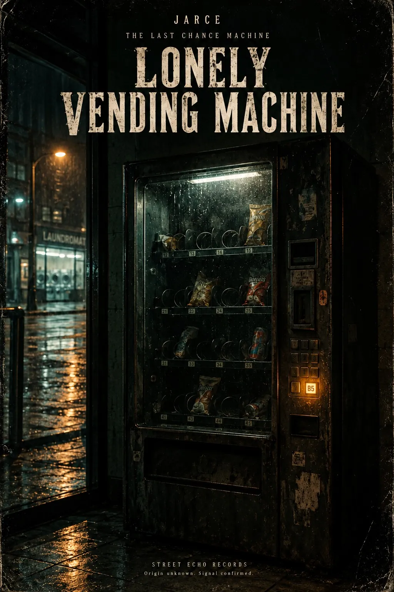
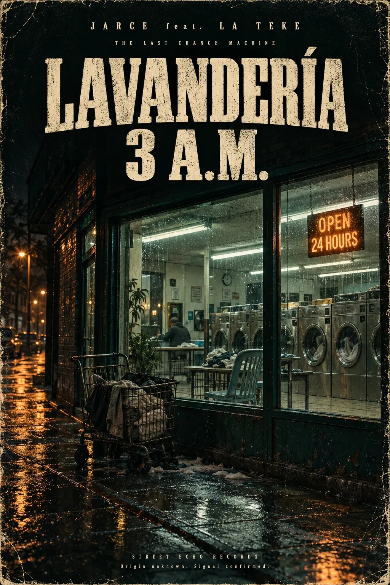

01. LONELY VENDING MACHINE
English · Rock Experimental / Post-punk / Cinematic · JARCE


▶ SIGNAL / 01STEREO
SER—001 / RECOVERED SIGNAL
Origin unknown.
Signal confirmed.
RECOVERED / 01–06
STREET ECHO RECORDSRecorded somewhere between
closing time and morning.
Nothing unusual. Look again.
English · Rock Experimental / Post-punk / Cinematic · JARCE

English · Post-punk / Experimental / Rap · JARCE

English · Experimental / Cinematic · JARCE

Español · Urban / Experimental / Rap · JARCE

Español · Rap / Soul / Experimental · JARCE feat. LA TEKE

English · Post-punk / Experimental / Rap · JARCE

END OF RECOVERED INDEX / SOURCE UNCONFIRMED
Somewhere,
one light is still on.
THE SIGNAL REMAINS ACTIVE.